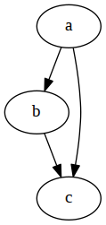

This is my loose collection of snippets, I use from day to day.
dot
dot is a graph description language. Assuming a image viewer like feh is installed
echo 'digraph test { a -> b; b -> c; a -> c; }' | dot -Tpng | feh -
will show

snippet
remove empty lines from output
sed '/^\s*$/d'git
pull all repositories located in sub directories, assuming there are only subdirectories in the current directory
#!/bin/bash
ls | xargs -I{} git -C {} pullvim
some vim stuff
movement
basic movement
k- upj- downh- leftl- right
jumps
0- beginning of a line$- end of a line- ‘w’ - beginning of a world
- ‘)’ - forward one sentence
- ‘(’ - backward one sentence
visual
vi'- select inner text between two'<C-V>- select columnI- insert text -><ESC>-> insert text in front of the selection